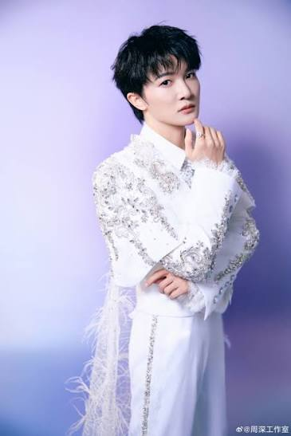
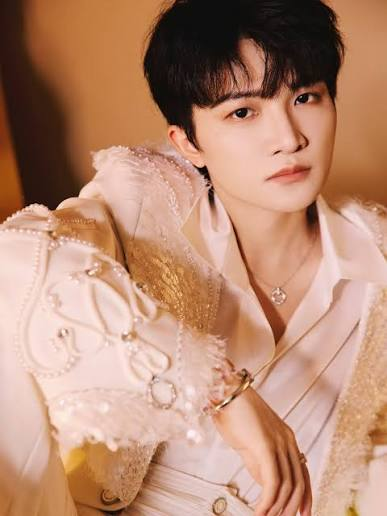

周深


- 周深（1992年9月29日—），中国大陆男歌手、音乐制作人，出生于湖南邵阳，成长于贵州贵阳，并毕业于乌克兰利沃夫国立音乐学院。
- 他在2014年参加《中国好声音第三季》正式出道，代表歌曲包括《大鱼》、《灯火里的中国》、《小美满》、《光亮》等，以其清亮嗓音、多变声线及融合美声与流行的唱法而闻名。
- 由于周深的嗓音清亮温柔，其声音偏向童声的音色，故经常被形容为“男身女嗓”。中央人民广播电台曾评价周深的嗓音“清纯干净”，并称其“声音的辨识度很高”。
我喜欢歌曲
- 大鱼
- 璀璨的冒险人
- 小美满
Social Media